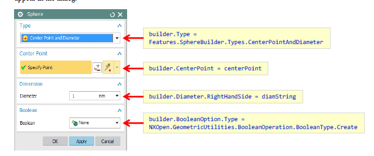

What is builder in Nxopen?
The Builder Pattern is a well-known design pattern used in software development to construct complex objects step by
step. In the context of NX Open, which is the programming interface for Siemens NX, the Builder Pattern can be applied
when creating and configuring complex objects or entities within the NX environment programmatically.
The Builder Pattern allows the creation of objects in a more flexible and controlled manner by breaking down the
construction process into separate steps. This pattern is beneficial when dealing with complex objects that require
multiple parameters or configurations to be set.
In NX Open, the Builder Pattern might be used when creating objects like features, parts, assemblies, sketches, or any
other complex entities within the software. Here's how it might be applied:
1. Separation of Concerns: The pattern separates the construction of an object from its representation, allowing
step-by-step configuration of the object's properties.
2. Step-by-Step Building: It involves a builder class or set of functions that gradually configure the object. Each step
might correspond to setting a specific attribute or aspect of the object.
3. Fluency and Readability: The pattern often results in a fluent interface, making the code more readable and
understandable as each method call configures a part of the object.
4. Customization and Flexibility: Builders can allow for conditional configurations or specific customizations during
the construction process, adapting the object to various needs.
For instance, if you're creating a complex feature in Siemens NX using NXOpen, a builder might provide methods for
setting different parameters such as dimensions, placement, shape, or other attributes step by step. This enables a more
organized and controlled way of constructing the feature.
By implementing the Builder Pattern in NX Open, developers can create more maintainable, flexible, and readable code,
especially when dealing with the creation of complex objects that require multiple configurations or settings within
Siemens NX.
The code uses the so-called “Builder Pattern”, which is a well-known software engineering technique for creating complex
objects. The general approach is to
Create a “builder” object — line [3]
Modify its properties as desired — lines [4], [5], [6], [7]
“Commit” the builder to create a new object — line [8]
So, as we can see, along with the Sphere class, there is a corresponding SphereBuilder class, and a function called
CreateSphereBuilder that produces a basic SphereBuilder object. The NX Open Reference Guide will help you find the
classes and functions you need. Specifically
The Sphere class refers you to the SphereBuilder class
The SphereBuilder class refers you to the CreateSphereBuilder function
The CreateSphereBuilder function indicates that it is provided by the factory class “FeatureCollection”
The FeatureCollection class tells you to obtain an instance from a Part object (e.g. workPart.Features)
You can actually use the CreateSphereBuilder function for either creation or editing purposes: if you input an existing
Sphere object, then the Commit method will edit this sphere; if you input Nothing, then the Commit method will create a
new sphere object, as in our code above.

The Commit function returns an NXOpen.NXObject, which is not immediately useful, in most situations. You typically have
to cast to a more specific type (NXOpen.Features.Sphere in our example above) before making further use of the object.
Builders for “feature” objects also have a CommitFeature method. This returns a very general NXOpen.Features.Feature
object, so a cast will still be necessary in many cases. You can either perform the cast explicitly, or do it implicitly
with an assignment statement, as shown here:
The meanings of the various builder properties that you need to set are fairly obvious in this simple case. But,
whenever you’re in doubt about the meaning of a builder property, you can look at the corresponding feature creation
dialog in interactive NX. You will see that the builder properties are closely related to the options that appear in the
dialog.